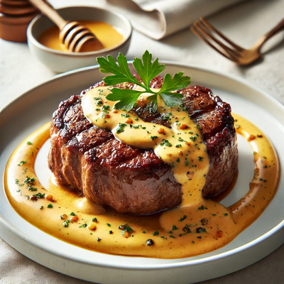
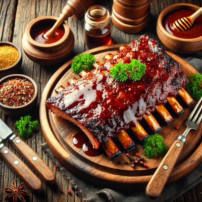

Carne com Molho de Mostarda e Mel

Esta receita eleva a clássica combinação de carne com molho ao unir a suculência de um corte grelhado com a sofisticação de um molho de mostarda e mel. O contraste entre o sabor intenso da carne e a delicada doçura do mel, equilibrado pela leve acidez da mostarda, cria uma explosão de sabores complexos e envolventes. A textura macia da carne, junto com o molho aveludado, transforma cada garfada em uma experiência culinária rica, perfeita para ocasiões especiais ou quando se deseja impressionar com um prato refinado e inesquecível.
Ingredientes:
- 500g de filé mignon ou contrafilé (em bifes ou tiras)
- Sal e pimenta-do-reino a gosto
- 2 colheres de sopa de azeite de oliva
- 1 colher de sopa de manteiga
- 2 colheres de sopa de mostarda Dijon
- 2 colheres de sopa de mel
- 1 dente de alho picado
- 1/2 xícara de creme de leite fresco (ou creme culinário)
- Salsinha picada para decorar (opcional)
Modo de Preparo:
- Tempere os bifes de carne com sal e pimenta-do-reino a gosto. Deixe descansar por alguns minutos.
- Em uma frigideira grande, aqueça o azeite e a manteiga em fogo médio-alto.
- Adicione os bifes e sele por 3 a 4 minutos de cada lado, ou até atingir o ponto desejado. Retire e reserve, mantendo-os aquecidos.
- Na mesma frigideira, adicione o alho e refogue rapidamente.
- Acrescente a mostarda e o mel, mexendo bem até formarem um molho homogêneo.
- Adicione o creme de leite e misture até incorporar. Cozinhe por mais 2 a 3 minutos, mexendo sempre, até o molho engrossar levemente.
- Coloque os bifes de volta na frigideira para absorver o molho por 1 minuto.
- Sirva a carne com o molho de mostarda e mel por cima, decorando com salsinha picada, se desejar.
Costelinha ao Molho Barbecue

Esta receita de costelinha ao molho barbecue é um verdadeiro deleite para os amantes de sabores intensos e marcantes. A combinação perfeita entre a suculência da carne macia, que se desmancha a cada mordida, e o molho barbecue agridoce com um toque defumado, cria uma experiência gastronômica irresistível. O contraste entre o sabor profundo da carne e a caramelização do molho torna este prato uma escolha ideal tanto para um churrasco casual quanto para um jantar especial, garantindo sempre uma refeição inesquecível.
Ingredientes:
- 1 kg de costelinha de porco
- Sal e pimenta-do-reino a gosto
- 2 dentes de alho picados
- 2 colheres de sopa de azeite de oliva
- 1 colher de sopa de páprica defumada
- 1/2 xícara de molho barbecue (pode ser caseiro ou comprado)
- 2 colheres de sopa de açúcar mascavo
- 1 colher de sopa de vinagre de maçã
- 1/2 xícara de água
- Salsinha picada para decorar (opcional)
Modo de Preparo:
- Tempere a costelinha com sal, pimenta-do-reino, alho e páprica defumada. Deixe marinando por pelo menos 1 hora (ou de um dia para o outro).
- Preaqueça o forno a 180°C.
- Em uma assadeira, coloque a costelinha temperada e regue com azeite. Cubra com papel-alumínio e asse por 1h30min a 2 horas, até que a carne esteja macia.
- Enquanto a costelinha assa, prepare o molho barbecue: misture o molho pronto com o açúcar mascavo, vinagre de maçã e água em uma panela. Cozinhe em fogo médio, mexendo de vez em quando, até engrossar levemente.
- Após o tempo de forno, retire o papel-alumínio, pincele generosamente o molho barbecue sobre as costelinhas e aumente a temperatura para 220°C.
- Deixe assar por mais 15-20 minutos, ou até que o molho esteja caramelizado e a carne bem dourada.
- Retire do forno, corte as costelinhas e sirva com mais molho por cima, decorando com salsinha picada, se desejar.